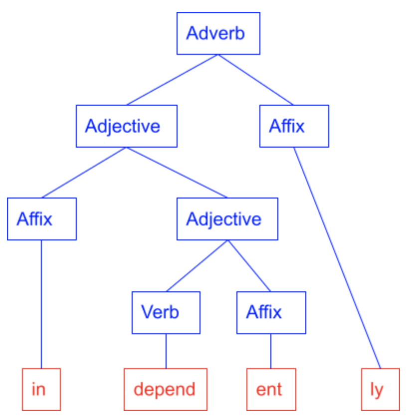
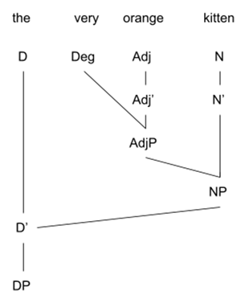
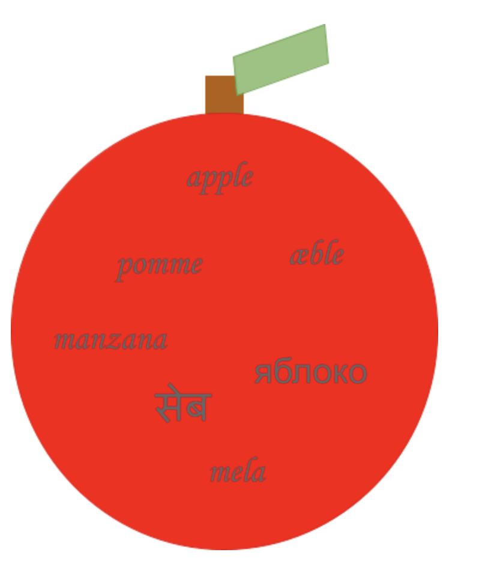

Linguistics is the study of languages. Now that overarching broad statement is easily broken down into the different fields of linguistics. Each of these branches of linguistics has its own specific focus, but they work together to give a greater understanding of human language. The different branches of language structure and their respective specializations are:
Phonetics - the study of the physical properties of speech
Phonology - the study of speech sounds and systems of speech sounds
Morphology - the study of word formations 
Syntax - the study of sentence formation 
Semantics - The study of word meaning 
Pragmatics - The study of language use
Additionally, there are other fields of linguistics that go beyond the structure of language itself. Other interdisciplinary fields of linguistics include:
Historical linguistics - the study of the history and development of language
Sociolinguistics - the study of language in relation to social factors.
Psycholinguistics - the study of language behavior in relation to psychological processes
Anthropological Linguistics - the study of language in relation to culture
Dialectology - the study of dialects
Computational Linguistics - the study of computational approaches to linguistics
Neurolinguistics - the study of how language is represented in the brain